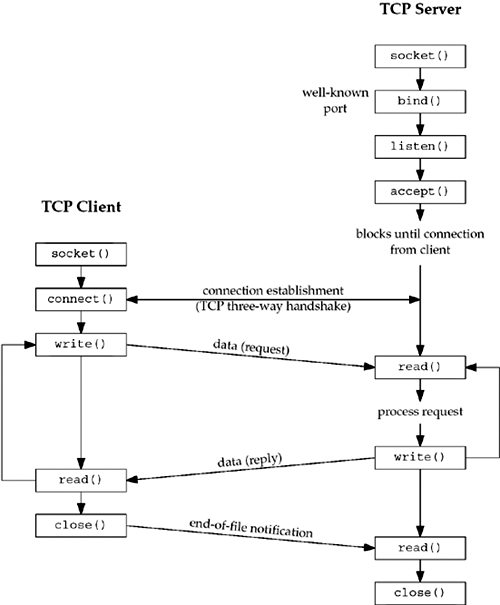

| [ Team LiB ] |
|
4.1 IntroductionThis chapter describes the elementary socket functions required to write a complete TCP client and server. We will first describe all the elementary socket functions that we will be using and then develop the client and server in the next chapter. We will work with this client and server throughout the text, enhancing it many times (Figures 1.12 and 1.13). We will also describe concurrent servers, a common Unix technique for providing concurrency when numerous clients are connected to the same server at the same time. Each client connection causes the server to fork a new process just for that client. In this chapter, we consider only the one-process-per-client model using fork, but we will consider a different one-thread-per-client model when we describe threads in Chapter 26. Figure 4.1 shows a timeline of the typical scenario that takes place between a TCP client and server. First, the server is started, then sometime later, a client is started that connects to the server. We assume that the client sends a request to the server, the server processes the request, and the server sends a reply back to the client. This continues until the client closes its end of the connection, which sends an end-of-file notification to the server. The server then closes its end of the connection and either terminates or waits for a new client connection. Figure 4.1. Socket functions for elementary TCP client/server. |
| [ Team LiB ] |
|